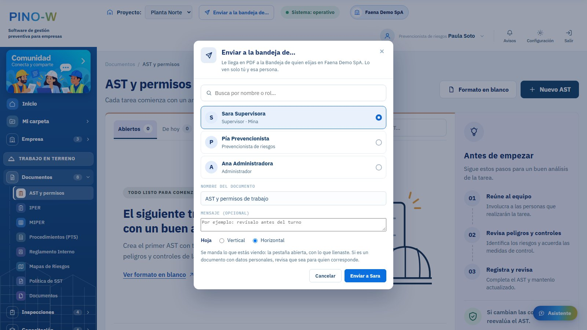
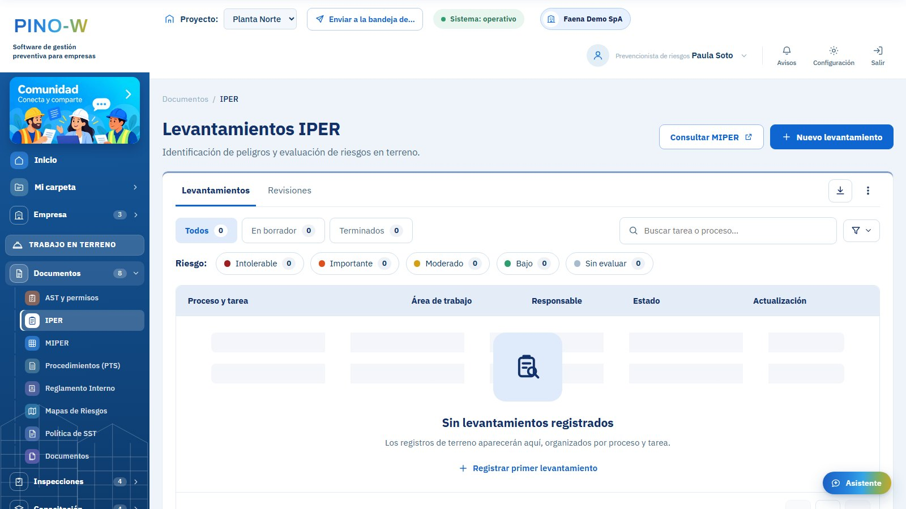

Documentos
- AST y permisos de trabajo
- IPER en terreno y la MIPER en Excel
- Procedimientos (PTS) que se arman desde la matriz
- Reglamento Interno, Política de SST y mapas de riesgos
- Gestión documental con versiones y vencimientos
Gestión preventiva en terreno
Matriz de riesgos, AST, procedimientos, inspecciones, EPP, capacitaciones y la Bandeja de la empresa: lo que hoy vive repartido entre planillas, fotos del celular y el cuaderno de terreno, con trazabilidad desde el hallazgo hasta su cierre.
Versión 0.21 · Windows 10 y 11 de 64 bits · 49 MB
Las mismas herramientas que usa un prevencionista en terreno, ordenadas como trabaja: identificar y evaluar, controlar, capacitar, investigar y mejorar.
Cada solicitud va a quien corresponde y queda con su firma y su fecha. Además puedes mandar cualquier documento a la persona que elijas.

La empresa entra con un código y los administradores le dan a cada persona su rol. Con ese rol, cada uno ve sus herramientas y nada más.
Las herramientas consideran lo que pide el reglamento de seguridad minera (DS 132) y lo que se informa a Sernageomin.
Checklists de CAEX, cargadores y LHD, perforadoras y frentes de carguío, con el aviso a la supervisión cuando algo falla.
Control de tronadura con su retorno firmado y registro de tiros quedados hasta su eliminación.
Verificaciones en terreno: si un control falla, el trabajo se detiene y queda registrado.
Espacio confinado, trabajo en caliente, altura y eléctrico, y bloqueos con vuelta a operar firmada.
La estadística mensual y el informe técnico de accidentes graves, firmados al enviarlos.
La mandante ve a sus contratistas por área y recibe sus documentos, accidentes y estadística.
PINO-W se diseñó para que cada dato esté solo donde tiene que estar.
La matriz, las inspecciones y los demás registros se guardan en tu equipo. Nada sube solo: sube lo que tú envías.
De los exámenes se guarda solo la vigencia, nunca el resultado. Los avisos de dolencias los ve solo prevención.
Una denuncia la ven solo quien la hace y quienes deben atenderla. No se reenvía ni se manda con copia.
Quien firma escribe su clave: queda su RUT, la hora, una huella del documento y un código para verificarlo.
Los avisos por correo solo dicen que hay algo nuevo. El detalle se ve dentro del programa.
Cada persona ve solo lo que le corresponde a su rol, y lo que se manda de persona a persona lo ven solo ellas.
Antes que nada, tu empresa cotiza con nosotros y la dejamos activa. Después cada persona descarga el programa y entra con su cuenta; necesita internet.
La primera vez puede aparecer «Windows protegió su PC», porque el programa todavía no tiene firma digital. Haz clic en Más información y luego en Ejecutar de todas formas.
Para trabajadores en faena: tu jornada, tu AST, firmar documentos y avisar un peligro o un accidente, aunque no tengas señal. Ábrelo en el celular y elige «Agregar a pantalla de inicio».
Abrir en el celular
Escríbenos para cotizar PINO-W para tu empresa. Después te ayudamos a ponerlo en marcha con tu equipo: la empresa, los roles, los proyectos y la matriz.